The 'cito' package provides a user-friendly interface for training and interpreting deep neural networks (DNN). 'cito' simplifies the fitting of DNNs by supporting the familiar formula syntax, hyperparameter tuning under cross-validation, and helps to detect and handle convergence problems. DNNs can be trained on CPU, GPU and MacOS GPUs. In addition, 'cito' has many downstream functionalities such as various explainable AI (xAI) metrics (e.g. variable importance, partial dependence plots, accumulated local effect plots, and effect estimates) to interpret trained DNNs. 'cito' optionally provides confidence intervals (and p-values) for all xAI metrics and predictions. At the same time, 'cito' is computationally efficient because it is based on the deep learning framework 'torch'. The 'torch' package is native to R, so no Python installation or other API is required for this package.
Details
Cito is built around its main function dnn, which creates and trains a deep neural network. Various tools for analyzing the trained neural network are available.
Installation
in order to install cito please follow these steps:
install.packages("cito")
install_torch(reinstall = TRUE)
cito functions and typical workflow
dnn: train deep neural networkanalyze_training: check for convergence by comparing training loss with baseline losscontinue_training: continues training of an existing cito dnn model for additional epochssummary.citodnn: extract xAI metrics/effects to understand how predictions are madePDP: plot the partial dependency plot for a specific featureALE: plot the accumulated local effect plot for a specific feature
Check out the vignettes for more details on training NN and how a typical workflow with 'cito' could look like.
Author
Maintainer: Maximilian Pichler maximilian.pichler@biologie.uni-regensburg.de (ORCID)
Authors:
Christian Amesöder Christian.Amesoeder@informatik.uni-regensburg.de
Other contributors:
Florian Hartig florian.hartig@biologie.uni-regensburg.de (ORCID) [contributor]
Armin Schenk armin.schenk99@gmail.com [contributor]
Examples
# \donttest{
if(torch::torch_is_installed()){
library(cito)
# Example workflow in cito
## Build and train Network
### softmax is used for multi-class responses (e.g., Species)
nn.fit<- dnn(Species~., data = datasets::iris, loss = "softmax")
## The training loss is below the baseline loss but at the end of the
## training the loss was still decreasing, so continue training for another 50
## epochs
nn.fit <- continue_training(nn.fit, epochs = 50L)
# Sturcture of Neural Network
print(nn.fit)
# Plot Neural Network
plot(nn.fit)
## 4 Input nodes (first layer) because of 4 features
## 3 Output nodes (last layer) because of 3 response species (one node for each
## level in the response variable).
## The layers between the input and output layer are called hidden layers (two
## of them)
## We now want to understand how the predictions are made, what are the
## important features? The summary function automatically calculates feature
## importance (the interpretation is similar to an anova) and calculates
## average conditional effects that are similar to linear effects:
summary(nn.fit)
## To visualize the effect (response-feature effect), we can use the ALE and
## PDP functions
# Partial dependencies
PDP(nn.fit, variable = "Petal.Length")
# Accumulated local effect plots
ALE(nn.fit, variable = "Petal.Length")
# Per se, it is difficult to get confidence intervals for our xAI metrics (or
# for the predictions). But we can use bootstrapping to obtain uncertainties
# for all cito outputs:
## Re-fit the neural network with bootstrapping
nn.fit<- dnn(Species~.,
data = datasets::iris,
loss = "softmax",
epochs = 150L,
verbose = FALSE,
bootstrap = 20L)
## convergence can be tested via the analyze_training function
analyze_training(nn.fit)
## Summary for xAI metrics (can take some time):
summary(nn.fit)
## Now with standard errors and p-values
## Note: Take the p-values with a grain of salt! We do not know yet if they are
## correct (e.g. if you use regularization, they are likely conservative == too
## large)
## Predictions with bootstrapping:
dim(predict(nn.fit))
## predictions are by default averaged (over the bootstrap samples)
## Multinomial and conditional logit regression
m = dnn(Species~., data = iris, loss = "clogit", lr = 0.01)
m = dnn(Species~., data = iris, loss = "multinomial", lr = 0.01)
Y = t(stats::rmultinom(100, 10, prob = c(0.2, 0.2, 0.5)))
m = dnn(cbind(X1, X2, X3)~., data = data.frame(Y, A = as.factor(runif(100))), loss = "multinomial", lr = 0.01)
## conditional logit for size > 1 is not supported yet
# Hyperparameter tuning (experimental feature)
hidden_values = matrix(c(5, 2,
4, 2,
10,2,
15,2), 4, 2, byrow = TRUE)
## Potential architectures we want to test, first column == number of nodes
print(hidden_values)
nn.fit = dnn(Species~.,
data = iris,
epochs = 30L,
loss = "softmax",
hidden = tune(values = hidden_values),
lr = tune(0.00001, 0.1) # tune lr between range 0.00001 and 0.1
)
## Tuning results:
print(nn.fit$tuning)
# test = Inf means that tuning was cancelled after only one fit (within the CV)
# Advanced: Custom loss functions and additional parameters
## Normal Likelihood with sd parameter:
custom_loss = function(pred, true) {
logLik = torch::distr_normal(pred,
scale = torch::nnf_relu(scale)+
0.001)$log_prob(true)
return(-logLik$mean())
}
nn.fit<- dnn(Sepal.Length~.,
data = datasets::iris,
loss = custom_loss,
verbose = FALSE,
custom_parameters = list(scale = 1.0)
)
nn.fit$parameter$scale
## Multivariate normal likelihood with parametrized covariance matrix
## Sigma = L*L^t + D
## Helper function to build covariance matrix
create_cov = function(LU, Diag) {
return(torch::torch_matmul(LU, LU$t()) + torch::torch_diag(Diag$exp()+0.01))
}
custom_loss_MVN = function(true, pred) {
Sigma = create_cov(SigmaPar, SigmaDiag)
logLik = torch::distr_multivariate_normal(pred,
covariance_matrix = Sigma)$
log_prob(true)
return(-logLik$mean())
}
nn.fit<- dnn(cbind(Sepal.Length, Sepal.Width, Petal.Length)~.,
data = datasets::iris,
lr = 0.01,
verbose = FALSE,
loss = custom_loss_MVN,
custom_parameters =
list(SigmaDiag = rep(0, 3),
SigmaPar = matrix(rnorm(6, sd = 0.001), 3, 2))
)
as.matrix(create_cov(nn.fit$loss$parameter$SigmaPar,
nn.fit$loss$parameter$SigmaDiag))
}
#> Loss at epoch 1: 1.114507, lr: 0.01000
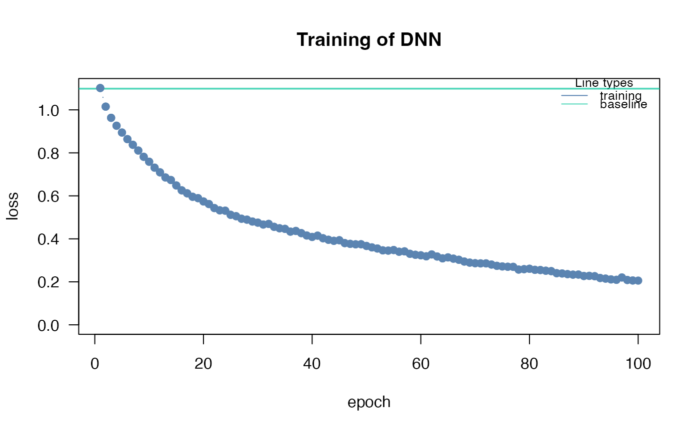
#> Loss at epoch 2: 0.921588, lr: 0.01000
#> Loss at epoch 3: 0.802500, lr: 0.01000
#> Loss at epoch 4: 0.722514, lr: 0.01000
#> Loss at epoch 5: 0.651183, lr: 0.01000
#> Loss at epoch 6: 0.597195, lr: 0.01000
#> Loss at epoch 7: 0.559294, lr: 0.01000
#> Loss at epoch 8: 0.522748, lr: 0.01000
#> Loss at epoch 9: 0.479563, lr: 0.01000
#> Loss at epoch 10: 0.446431, lr: 0.01000
#> Loss at epoch 11: 0.423882, lr: 0.01000
#> Loss at epoch 12: 0.397875, lr: 0.01000
#> Loss at epoch 13: 0.390342, lr: 0.01000
#> Loss at epoch 14: 0.379736, lr: 0.01000
#> Loss at epoch 15: 0.348979, lr: 0.01000
#> Loss at epoch 16: 0.349096, lr: 0.01000
#> Loss at epoch 17: 0.311746, lr: 0.01000
#> Loss at epoch 18: 0.314781, lr: 0.01000
#> Loss at epoch 19: 0.286511, lr: 0.01000
#> Loss at epoch 20: 0.275567, lr: 0.01000
#> Loss at epoch 21: 0.269158, lr: 0.01000
#> Loss at epoch 22: 0.252210, lr: 0.01000
#> Loss at epoch 23: 0.247484, lr: 0.01000
#> Loss at epoch 24: 0.251595, lr: 0.01000
#> Loss at epoch 25: 0.235704, lr: 0.01000
#> Loss at epoch 26: 0.224738, lr: 0.01000
#> Loss at epoch 27: 0.219063, lr: 0.01000
#> Loss at epoch 28: 0.208005, lr: 0.01000
#> Loss at epoch 29: 0.193599, lr: 0.01000
#> Loss at epoch 30: 0.190068, lr: 0.01000
#> Loss at epoch 31: 0.234760, lr: 0.01000
#> Loss at epoch 32: 0.183407, lr: 0.01000
#> Loss at epoch 33: 0.173909, lr: 0.01000
#> Loss at epoch 34: 0.176590, lr: 0.01000
#> Loss at epoch 35: 0.165226, lr: 0.01000
#> Loss at epoch 36: 0.169586, lr: 0.01000
#> Loss at epoch 37: 0.187235, lr: 0.01000
#> Loss at epoch 38: 0.148333, lr: 0.01000
#> Loss at epoch 39: 0.154191, lr: 0.01000
#> Loss at epoch 40: 0.154290, lr: 0.01000
#> Loss at epoch 41: 0.141859, lr: 0.01000
#> Loss at epoch 42: 0.140341, lr: 0.01000
#> Loss at epoch 43: 0.135480, lr: 0.01000
#> Loss at epoch 44: 0.139144, lr: 0.01000
#> Loss at epoch 45: 0.138702, lr: 0.01000
#> Loss at epoch 46: 0.126017, lr: 0.01000
#> Loss at epoch 47: 0.125611, lr: 0.01000
#> Loss at epoch 48: 0.134287, lr: 0.01000
#> Loss at epoch 49: 0.120630, lr: 0.01000
#> Loss at epoch 50: 0.127448, lr: 0.01000
#> Loss at epoch 51: 0.118732, lr: 0.01000
#> Loss at epoch 52: 0.112829, lr: 0.01000
#> Loss at epoch 53: 0.116284, lr: 0.01000
#> Loss at epoch 54: 0.106568, lr: 0.01000
#> Loss at epoch 55: 0.150816, lr: 0.01000
#> Loss at epoch 56: 0.121862, lr: 0.01000
#> Loss at epoch 57: 0.139179, lr: 0.01000
#> Loss at epoch 58: 0.122244, lr: 0.01000
#> Loss at epoch 59: 0.106601, lr: 0.01000
#> Loss at epoch 60: 0.105961, lr: 0.01000
#> Loss at epoch 61: 0.094644, lr: 0.01000
#> Loss at epoch 62: 0.118553, lr: 0.01000
#> Loss at epoch 63: 0.101125, lr: 0.01000
#> Loss at epoch 64: 0.093866, lr: 0.01000
#> Loss at epoch 65: 0.100464, lr: 0.01000
#> Loss at epoch 66: 0.105228, lr: 0.01000
#> Loss at epoch 67: 0.093940, lr: 0.01000
#> Loss at epoch 68: 0.094464, lr: 0.01000
#> Loss at epoch 69: 0.092658, lr: 0.01000
#> Loss at epoch 70: 0.111676, lr: 0.01000
#> Loss at epoch 71: 0.102666, lr: 0.01000
#> Loss at epoch 72: 0.096125, lr: 0.01000
#> Loss at epoch 73: 0.104300, lr: 0.01000
#> Loss at epoch 74: 0.089672, lr: 0.01000
#> Loss at epoch 75: 0.088387, lr: 0.01000
#> Loss at epoch 76: 0.090926, lr: 0.01000
#> Loss at epoch 77: 0.095100, lr: 0.01000
#> Loss at epoch 78: 0.084575, lr: 0.01000
#> Loss at epoch 79: 0.109941, lr: 0.01000
#> Loss at epoch 80: 0.098977, lr: 0.01000
#> Loss at epoch 81: 0.089755, lr: 0.01000
#> Loss at epoch 82: 0.097087, lr: 0.01000
#> Loss at epoch 83: 0.085874, lr: 0.01000
#> Loss at epoch 84: 0.080107, lr: 0.01000
#> Loss at epoch 85: 0.081135, lr: 0.01000
#> Loss at epoch 86: 0.093528, lr: 0.01000
#> Loss at epoch 87: 0.085032, lr: 0.01000
#> Loss at epoch 88: 0.098563, lr: 0.01000
#> Loss at epoch 89: 0.103210, lr: 0.01000
#> Loss at epoch 90: 0.083423, lr: 0.01000
#> Loss at epoch 91: 0.085040, lr: 0.01000
#> Loss at epoch 92: 0.084034, lr: 0.01000
#> Loss at epoch 93: 0.130019, lr: 0.01000
#> Loss at epoch 94: 0.089831, lr: 0.01000
#> Loss at epoch 95: 0.069158, lr: 0.01000
#> Loss at epoch 96: 0.087342, lr: 0.01000
#> Loss at epoch 97: 0.072387, lr: 0.01000
#> Loss at epoch 98: 0.071732, lr: 0.01000
#> Loss at epoch 99: 0.082378, lr: 0.01000
#> Loss at epoch 100: 0.078333, lr: 0.01000
#> Loss at epoch 101: 0.098652, lr: 0.01000
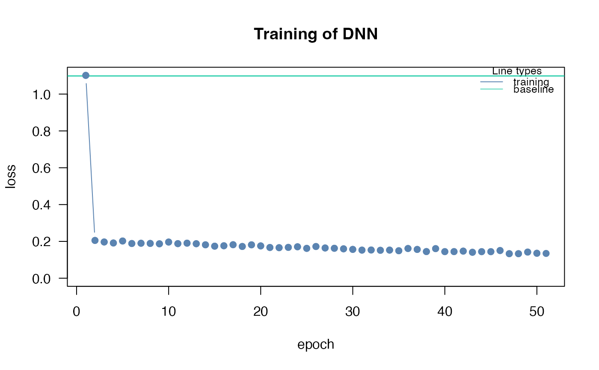
#> Loss at epoch 102: 0.078609, lr: 0.01000
#> Loss at epoch 103: 0.080407, lr: 0.01000
#> Loss at epoch 104: 0.071869, lr: 0.01000
#> Loss at epoch 105: 0.084137, lr: 0.01000
#> Loss at epoch 106: 0.091813, lr: 0.01000
#> Loss at epoch 107: 0.078743, lr: 0.01000
#> Loss at epoch 108: 0.088892, lr: 0.01000
#> Loss at epoch 109: 0.104082, lr: 0.01000
#> Loss at epoch 110: 0.068768, lr: 0.01000
#> Loss at epoch 111: 0.088212, lr: 0.01000
#> Loss at epoch 112: 0.081445, lr: 0.01000
#> Loss at epoch 113: 0.074226, lr: 0.01000
#> Loss at epoch 114: 0.075458, lr: 0.01000
#> Loss at epoch 115: 0.093506, lr: 0.01000
#> Loss at epoch 116: 0.075530, lr: 0.01000
#> Loss at epoch 117: 0.074877, lr: 0.01000
#> Loss at epoch 118: 0.076698, lr: 0.01000
#> Loss at epoch 119: 0.081380, lr: 0.01000
#> Loss at epoch 120: 0.074709, lr: 0.01000
#> Loss at epoch 121: 0.086922, lr: 0.01000
#> Loss at epoch 122: 0.067865, lr: 0.01000
#> Loss at epoch 123: 0.083059, lr: 0.01000
#> Loss at epoch 124: 0.071605, lr: 0.01000
#> Loss at epoch 125: 0.084262, lr: 0.01000
#> Loss at epoch 126: 0.077469, lr: 0.01000
#> Loss at epoch 127: 0.063985, lr: 0.01000
#> Loss at epoch 128: 0.082847, lr: 0.01000
#> Loss at epoch 129: 0.104097, lr: 0.01000
#> Loss at epoch 130: 0.063463, lr: 0.01000
#> Loss at epoch 131: 0.070642, lr: 0.01000
#> Loss at epoch 132: 0.066022, lr: 0.01000
#> Loss at epoch 133: 0.082793, lr: 0.01000
#> Loss at epoch 134: 0.073286, lr: 0.01000
#> Loss at epoch 135: 0.069963, lr: 0.01000
#> Loss at epoch 136: 0.067032, lr: 0.01000
#> Loss at epoch 137: 0.062976, lr: 0.01000
#> Loss at epoch 138: 0.085282, lr: 0.01000
#> Loss at epoch 139: 0.083725, lr: 0.01000
#> Loss at epoch 140: 0.081426, lr: 0.01000
#> Loss at epoch 141: 0.060674, lr: 0.01000
#> Loss at epoch 142: 0.069499, lr: 0.01000
#> Loss at epoch 143: 0.072004, lr: 0.01000
#> Loss at epoch 144: 0.074019, lr: 0.01000
#> Loss at epoch 145: 0.072269, lr: 0.01000
#> Loss at epoch 146: 0.075942, lr: 0.01000
#> Loss at epoch 147: 0.062878, lr: 0.01000
#> Loss at epoch 148: 0.070208, lr: 0.01000
#> Loss at epoch 149: 0.103406, lr: 0.01000
#> Loss at epoch 150: 0.070684, lr: 0.01000
#> dnn(formula = Species ~ Sepal.Length + Sepal.Width + Petal.Length +
#> Petal.Width, data = datasets::iris, loss = "softmax")
#> An `nn_module` containing 2,953 parameters.
#>
#> ── Modules ─────────────────────────────────────────────────────────────────────
#> • 0: <nn_linear> #250 parameters
#> • 1: <nn_selu> #0 parameters
#> • 2: <nn_linear> #2,550 parameters
#> • 3: <nn_selu> #0 parameters
#> • 4: <nn_linear> #153 parameters
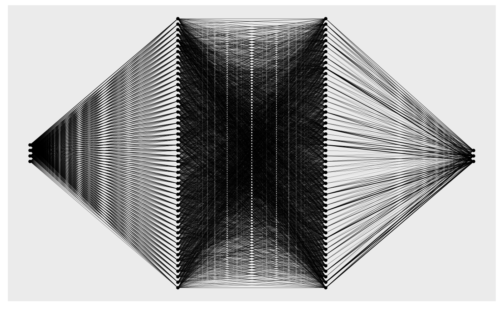
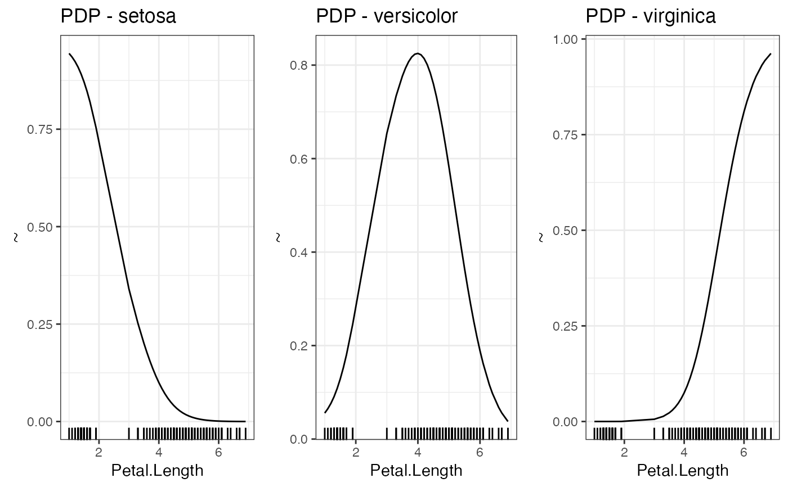
#> Number of Neighborhoods reduced to 8
#> Number of Neighborhoods reduced to 8
#> Number of Neighborhoods reduced to 8
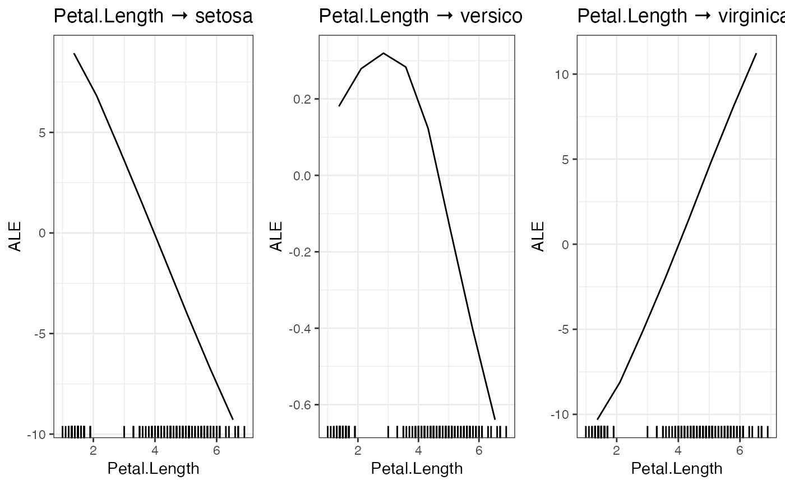
#> Loss at epoch 1: 0.643897, lr: 0.01000
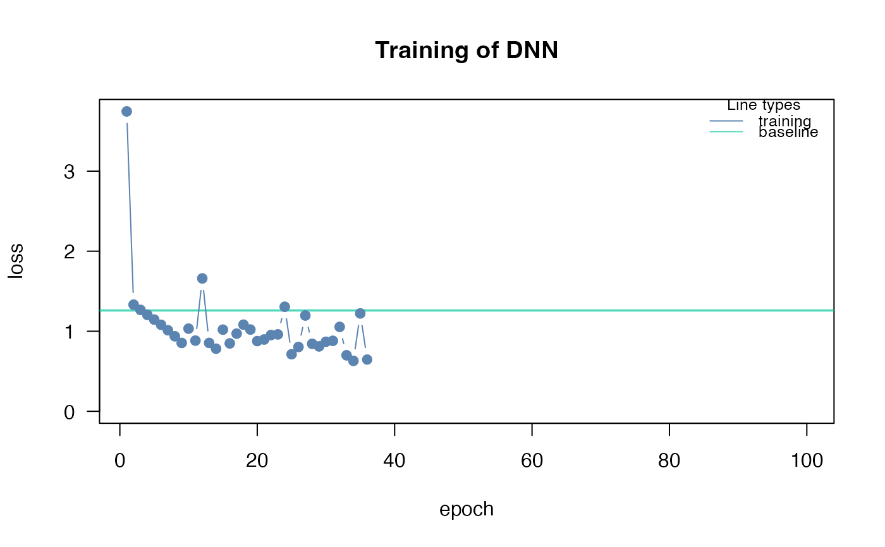
#> Loss at epoch 2: 0.555745, lr: 0.01000
#> Loss at epoch 3: 0.512150, lr: 0.01000
#> Loss at epoch 4: 0.474177, lr: 0.01000
#> Loss at epoch 5: 0.443038, lr: 0.01000
#> Loss at epoch 6: 0.416772, lr: 0.01000
#> Loss at epoch 7: 0.398623, lr: 0.01000
#> Loss at epoch 8: 0.372028, lr: 0.01000
#> Loss at epoch 9: 0.354860, lr: 0.01000
#> Loss at epoch 10: 0.340035, lr: 0.01000
#> Loss at epoch 11: 0.322298, lr: 0.01000
#> Loss at epoch 12: 0.319518, lr: 0.01000
#> Loss at epoch 13: 0.304396, lr: 0.01000
#> Loss at epoch 14: 0.303584, lr: 0.01000
#> Loss at epoch 15: 0.286626, lr: 0.01000
#> Loss at epoch 16: 0.275044, lr: 0.01000
#> Loss at epoch 17: 0.266997, lr: 0.01000
#> Loss at epoch 18: 0.260079, lr: 0.01000
#> Loss at epoch 19: 0.252994, lr: 0.01000
#> Loss at epoch 20: 0.251043, lr: 0.01000
#> Loss at epoch 21: 0.239745, lr: 0.01000
#> Loss at epoch 22: 0.233857, lr: 0.01000
#> Loss at epoch 23: 0.222980, lr: 0.01000
#> Loss at epoch 24: 0.219172, lr: 0.01000
#> Loss at epoch 25: 0.213398, lr: 0.01000
#> Loss at epoch 26: 0.207827, lr: 0.01000
#> Loss at epoch 27: 0.200886, lr: 0.01000
#> Loss at epoch 28: 0.194247, lr: 0.01000
#> Loss at epoch 29: 0.191512, lr: 0.01000
#> Loss at epoch 30: 0.184514, lr: 0.01000
#> Loss at epoch 31: 0.181743, lr: 0.01000
#> Loss at epoch 32: 0.180079, lr: 0.01000
#> Loss at epoch 33: 0.174511, lr: 0.01000
#> Loss at epoch 34: 0.164900, lr: 0.01000
#> Loss at epoch 35: 0.162060, lr: 0.01000
#> Loss at epoch 36: 0.159814, lr: 0.01000
#> Loss at epoch 37: 0.153084, lr: 0.01000
#> Loss at epoch 38: 0.147497, lr: 0.01000
#> Loss at epoch 39: 0.148244, lr: 0.01000
#> Loss at epoch 40: 0.145539, lr: 0.01000
#> Loss at epoch 41: 0.137232, lr: 0.01000
#> Loss at epoch 42: 0.141704, lr: 0.01000
#> Loss at epoch 43: 0.133631, lr: 0.01000
#> Loss at epoch 44: 0.130067, lr: 0.01000
#> Loss at epoch 45: 0.135948, lr: 0.01000
#> Loss at epoch 46: 0.125341, lr: 0.01000
#> Loss at epoch 47: 0.127492, lr: 0.01000
#> Loss at epoch 48: 0.122133, lr: 0.01000
#> Loss at epoch 49: 0.119526, lr: 0.01000
#> Loss at epoch 50: 0.119513, lr: 0.01000
#> Loss at epoch 51: 0.113398, lr: 0.01000
#> Loss at epoch 52: 0.111348, lr: 0.01000
#> Loss at epoch 53: 0.106891, lr: 0.01000
#> Loss at epoch 54: 0.108192, lr: 0.01000
#> Loss at epoch 55: 0.109036, lr: 0.01000
#> Loss at epoch 56: 0.104111, lr: 0.01000
#> Loss at epoch 57: 0.101453, lr: 0.01000
#> Loss at epoch 58: 0.098868, lr: 0.01000
#> Loss at epoch 59: 0.097930, lr: 0.01000
#> Loss at epoch 60: 0.096846, lr: 0.01000
#> Loss at epoch 61: 0.094722, lr: 0.01000
#> Loss at epoch 62: 0.096138, lr: 0.01000
#> Loss at epoch 63: 0.092181, lr: 0.01000
#> Loss at epoch 64: 0.096568, lr: 0.01000
#> Loss at epoch 65: 0.090962, lr: 0.01000
#> Loss at epoch 66: 0.091709, lr: 0.01000
#> Loss at epoch 67: 0.085122, lr: 0.01000
#> Loss at epoch 68: 0.084825, lr: 0.01000
#> Loss at epoch 69: 0.089362, lr: 0.01000
#> Loss at epoch 70: 0.083973, lr: 0.01000
#> Loss at epoch 71: 0.082875, lr: 0.01000
#> Loss at epoch 72: 0.083606, lr: 0.01000
#> Loss at epoch 73: 0.080940, lr: 0.01000
#> Loss at epoch 74: 0.080260, lr: 0.01000
#> Loss at epoch 75: 0.078783, lr: 0.01000
#> Loss at epoch 76: 0.079708, lr: 0.01000
#> Loss at epoch 77: 0.074265, lr: 0.01000
#> Loss at epoch 78: 0.078397, lr: 0.01000
#> Loss at epoch 79: 0.084753, lr: 0.01000
#> Loss at epoch 80: 0.082464, lr: 0.01000
#> Loss at epoch 81: 0.073646, lr: 0.01000
#> Loss at epoch 82: 0.074243, lr: 0.01000
#> Loss at epoch 83: 0.074324, lr: 0.01000
#> Loss at epoch 84: 0.078233, lr: 0.01000
#> Loss at epoch 85: 0.075044, lr: 0.01000
#> Loss at epoch 86: 0.073955, lr: 0.01000
#> Loss at epoch 87: 0.081271, lr: 0.01000
#> Loss at epoch 88: 0.066154, lr: 0.01000
#> Loss at epoch 89: 0.073000, lr: 0.01000
#> Loss at epoch 90: 0.069090, lr: 0.01000
#> Loss at epoch 91: 0.070269, lr: 0.01000
#> Loss at epoch 92: 0.068443, lr: 0.01000
#> Loss at epoch 93: 0.071502, lr: 0.01000
#> Loss at epoch 94: 0.069543, lr: 0.01000
#> Loss at epoch 95: 0.069553, lr: 0.01000
#> Loss at epoch 96: 0.069503, lr: 0.01000
#> Loss at epoch 97: 0.063291, lr: 0.01000
#> Loss at epoch 98: 0.066313, lr: 0.01000
#> Loss at epoch 99: 0.063259, lr: 0.01000
#> Loss at epoch 100: 0.066227, lr: 0.01000
#> Loss at epoch 1: 0.960986, lr: 0.01000
 #> Loss at epoch 2: 0.781178, lr: 0.01000
#> Loss at epoch 3: 0.686269, lr: 0.01000
#> Loss at epoch 4: 0.598250, lr: 0.01000
#> Loss at epoch 5: 0.531461, lr: 0.01000
#> Loss at epoch 6: 0.500856, lr: 0.01000
#> Loss at epoch 7: 0.454028, lr: 0.01000
#> Loss at epoch 8: 0.425335, lr: 0.01000
#> Loss at epoch 9: 0.411643, lr: 0.01000
#> Loss at epoch 10: 0.401492, lr: 0.01000
#> Loss at epoch 11: 0.362653, lr: 0.01000
#> Loss at epoch 12: 0.343971, lr: 0.01000
#> Loss at epoch 13: 0.331653, lr: 0.01000
#> Loss at epoch 14: 0.319508, lr: 0.01000
#> Loss at epoch 15: 0.297470, lr: 0.01000
#> Loss at epoch 16: 0.280757, lr: 0.01000
#> Loss at epoch 17: 0.285967, lr: 0.01000
#> Loss at epoch 18: 0.267452, lr: 0.01000
#> Loss at epoch 19: 0.256154, lr: 0.01000
#> Loss at epoch 20: 0.283718, lr: 0.01000
#> Loss at epoch 21: 0.232927, lr: 0.01000
#> Loss at epoch 22: 0.225556, lr: 0.01000
#> Loss at epoch 23: 0.208946, lr: 0.01000
#> Loss at epoch 24: 0.201307, lr: 0.01000
#> Loss at epoch 25: 0.198571, lr: 0.01000
#> Loss at epoch 26: 0.212871, lr: 0.01000
#> Loss at epoch 27: 0.191037, lr: 0.01000
#> Loss at epoch 28: 0.183692, lr: 0.01000
#> Loss at epoch 29: 0.183684, lr: 0.01000
#> Loss at epoch 30: 0.172652, lr: 0.01000
#> Loss at epoch 31: 0.158642, lr: 0.01000
#> Loss at epoch 32: 0.153388, lr: 0.01000
#> Loss at epoch 33: 0.159529, lr: 0.01000
#> Loss at epoch 34: 0.155886, lr: 0.01000
#> Loss at epoch 35: 0.141287, lr: 0.01000
#> Loss at epoch 36: 0.148917, lr: 0.01000
#> Loss at epoch 37: 0.152619, lr: 0.01000
#> Loss at epoch 38: 0.134613, lr: 0.01000
#> Loss at epoch 39: 0.135044, lr: 0.01000
#> Loss at epoch 40: 0.127126, lr: 0.01000
#> Loss at epoch 41: 0.129378, lr: 0.01000
#> Loss at epoch 42: 0.126594, lr: 0.01000
#> Loss at epoch 43: 0.121052, lr: 0.01000
#> Loss at epoch 44: 0.124277, lr: 0.01000
#> Loss at epoch 45: 0.122621, lr: 0.01000
#> Loss at epoch 46: 0.115365, lr: 0.01000
#> Loss at epoch 47: 0.112895, lr: 0.01000
#> Loss at epoch 48: 0.125984, lr: 0.01000
#> Loss at epoch 49: 0.121907, lr: 0.01000
#> Loss at epoch 50: 0.109851, lr: 0.01000
#> Loss at epoch 51: 0.107121, lr: 0.01000
#> Loss at epoch 52: 0.107226, lr: 0.01000
#> Loss at epoch 53: 0.105890, lr: 0.01000
#> Loss at epoch 54: 0.116141, lr: 0.01000
#> Loss at epoch 55: 0.111994, lr: 0.01000
#> Loss at epoch 56: 0.102944, lr: 0.01000
#> Loss at epoch 57: 0.108748, lr: 0.01000
#> Loss at epoch 58: 0.108930, lr: 0.01000
#> Loss at epoch 59: 0.111944, lr: 0.01000
#> Loss at epoch 60: 0.093649, lr: 0.01000
#> Loss at epoch 61: 0.098714, lr: 0.01000
#> Loss at epoch 62: 0.094321, lr: 0.01000
#> Loss at epoch 63: 0.099834, lr: 0.01000
#> Loss at epoch 64: 0.109629, lr: 0.01000
#> Loss at epoch 65: 0.088243, lr: 0.01000
#> Loss at epoch 66: 0.096260, lr: 0.01000
#> Loss at epoch 67: 0.094974, lr: 0.01000
#> Loss at epoch 68: 0.117039, lr: 0.01000
#> Loss at epoch 69: 0.087526, lr: 0.01000
#> Loss at epoch 70: 0.104483, lr: 0.01000
#> Loss at epoch 71: 0.084531, lr: 0.01000
#> Loss at epoch 72: 0.088917, lr: 0.01000
#> Loss at epoch 73: 0.085176, lr: 0.01000
#> Loss at epoch 74: 0.087149, lr: 0.01000
#> Loss at epoch 75: 0.105903, lr: 0.01000
#> Loss at epoch 76: 0.084588, lr: 0.01000
#> Loss at epoch 77: 0.096303, lr: 0.01000
#> Loss at epoch 78: 0.082790, lr: 0.01000
#> Loss at epoch 79: 0.091180, lr: 0.01000
#> Loss at epoch 80: 0.079777, lr: 0.01000
#> Loss at epoch 81: 0.079841, lr: 0.01000
#> Loss at epoch 82: 0.083883, lr: 0.01000
#> Loss at epoch 83: 0.075314, lr: 0.01000
#> Loss at epoch 84: 0.098915, lr: 0.01000
#> Loss at epoch 85: 0.087546, lr: 0.01000
#> Loss at epoch 86: 0.073237, lr: 0.01000
#> Loss at epoch 87: 0.073049, lr: 0.01000
#> Loss at epoch 88: 0.080827, lr: 0.01000
#> Loss at epoch 89: 0.088070, lr: 0.01000
#> Loss at epoch 90: 0.074319, lr: 0.01000
#> Loss at epoch 91: 0.093662, lr: 0.01000
#> Loss at epoch 92: 0.086580, lr: 0.01000
#> Loss at epoch 93: 0.084527, lr: 0.01000
#> Loss at epoch 94: 0.076824, lr: 0.01000
#> Loss at epoch 95: 0.086306, lr: 0.01000
#> Loss at epoch 96: 0.071252, lr: 0.01000
#> Loss at epoch 97: 0.082253, lr: 0.01000
#> Loss at epoch 98: 0.073169, lr: 0.01000
#> Loss at epoch 99: 0.100330, lr: 0.01000
#> Loss at epoch 100: 0.068483, lr: 0.01000
#> Loss at epoch 1: 3.745124, lr: 0.01000
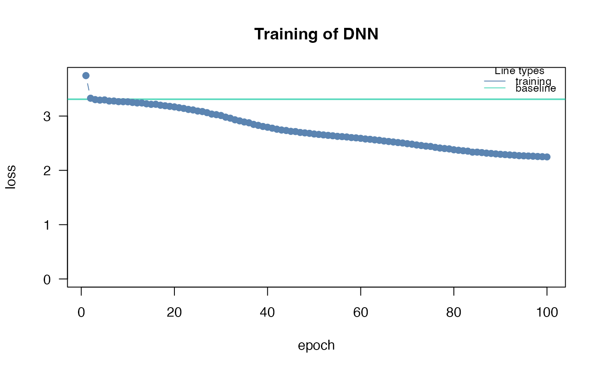
#> Loss at epoch 2: 3.328251, lr: 0.01000
#> Loss at epoch 3: 3.302773, lr: 0.01000
#> Loss at epoch 4: 3.293567, lr: 0.01000
#> Loss at epoch 5: 3.296934, lr: 0.01000
#> Loss at epoch 6: 3.277131, lr: 0.01000
#> Loss at epoch 7: 3.276492, lr: 0.01000
#> Loss at epoch 8: 3.265617, lr: 0.01000
#> Loss at epoch 9: 3.264305, lr: 0.01000
#> Loss at epoch 10: 3.262001, lr: 0.01000
#> Loss at epoch 11: 3.250504, lr: 0.01000
#> Loss at epoch 12: 3.241606, lr: 0.01000
#> Loss at epoch 13: 3.241011, lr: 0.01000
#> Loss at epoch 14: 3.225572, lr: 0.01000
#> Loss at epoch 15: 3.215665, lr: 0.01000
#> Loss at epoch 16: 3.216906, lr: 0.01000
#> Loss at epoch 17: 3.199386, lr: 0.01000
#> Loss at epoch 18: 3.188991, lr: 0.01000
#> Loss at epoch 19: 3.178707, lr: 0.01000
#> Loss at epoch 20: 3.168317, lr: 0.01000
#> Loss at epoch 21: 3.153696, lr: 0.01000
#> Loss at epoch 22: 3.140789, lr: 0.01000
#> Loss at epoch 23: 3.122335, lr: 0.01000
#> Loss at epoch 24: 3.112207, lr: 0.01000
#> Loss at epoch 25: 3.092271, lr: 0.01000
#> Loss at epoch 26: 3.083137, lr: 0.01000
#> Loss at epoch 27: 3.062716, lr: 0.01000
#> Loss at epoch 28: 3.036073, lr: 0.01000
#> Loss at epoch 29: 3.025473, lr: 0.01000
#> Loss at epoch 30: 3.009989, lr: 0.01000
#> Loss at epoch 31: 2.979538, lr: 0.01000
#> Loss at epoch 32: 2.960473, lr: 0.01000
#> Loss at epoch 33: 2.930881, lr: 0.01000
#> Loss at epoch 34: 2.911455, lr: 0.01000
#> Loss at epoch 35: 2.890503, lr: 0.01000
#> Loss at epoch 36: 2.876068, lr: 0.01000
#> Loss at epoch 37: 2.846273, lr: 0.01000
#> Loss at epoch 38: 2.828163, lr: 0.01000
#> Loss at epoch 39: 2.808601, lr: 0.01000
#> Loss at epoch 40: 2.793963, lr: 0.01000
#> Loss at epoch 41: 2.776763, lr: 0.01000
#> Loss at epoch 42: 2.757956, lr: 0.01000
#> Loss at epoch 43: 2.742979, lr: 0.01000
#> Loss at epoch 44: 2.734031, lr: 0.01000
#> Loss at epoch 45: 2.718337, lr: 0.01000
#> Loss at epoch 46: 2.714531, lr: 0.01000
#> Loss at epoch 47: 2.698085, lr: 0.01000
#> Loss at epoch 48: 2.690153, lr: 0.01000
#> Loss at epoch 49: 2.681735, lr: 0.01000
#> Loss at epoch 50: 2.669424, lr: 0.01000
#> Loss at epoch 51: 2.661329, lr: 0.01000
#> Loss at epoch 52: 2.652574, lr: 0.01000
#> Loss at epoch 53: 2.644271, lr: 0.01000
#> Loss at epoch 54: 2.636587, lr: 0.01000
#> Loss at epoch 55: 2.626241, lr: 0.01000
#> Loss at epoch 56: 2.621020, lr: 0.01000
#> Loss at epoch 57: 2.614562, lr: 0.01000
#> Loss at epoch 58: 2.603937, lr: 0.01000
#> Loss at epoch 59: 2.598161, lr: 0.01000
#> Loss at epoch 60: 2.589479, lr: 0.01000
#> Loss at epoch 61: 2.577862, lr: 0.01000
#> Loss at epoch 62: 2.571892, lr: 0.01000
#> Loss at epoch 63: 2.561261, lr: 0.01000
#> Loss at epoch 64: 2.553368, lr: 0.01000
#> Loss at epoch 65: 2.540743, lr: 0.01000
#> Loss at epoch 66: 2.531925, lr: 0.01000
#> Loss at epoch 67: 2.522212, lr: 0.01000
#> Loss at epoch 68: 2.511969, lr: 0.01000
#> Loss at epoch 69: 2.503509, lr: 0.01000
#> Loss at epoch 70: 2.491279, lr: 0.01000
#> Loss at epoch 71: 2.481796, lr: 0.01000
#> Loss at epoch 72: 2.467680, lr: 0.01000
#> Loss at epoch 73: 2.457318, lr: 0.01000
#> Loss at epoch 74: 2.446015, lr: 0.01000
#> Loss at epoch 75: 2.440097, lr: 0.01000
#> Loss at epoch 76: 2.423248, lr: 0.01000
#> Loss at epoch 77: 2.411274, lr: 0.01000
#> Loss at epoch 78: 2.402145, lr: 0.01000
#> Loss at epoch 79: 2.395086, lr: 0.01000
#> Loss at epoch 80: 2.379084, lr: 0.01000
#> Loss at epoch 81: 2.369966, lr: 0.01000
#> Loss at epoch 82: 2.360886, lr: 0.01000
#> Loss at epoch 83: 2.353713, lr: 0.01000
#> Loss at epoch 84: 2.335225, lr: 0.01000
#> Loss at epoch 85: 2.335493, lr: 0.01000
#> Loss at epoch 86: 2.327543, lr: 0.01000
#> Loss at epoch 87: 2.317135, lr: 0.01000
#> Loss at epoch 88: 2.311433, lr: 0.01000
#> Loss at epoch 89: 2.303082, lr: 0.01000
#> Loss at epoch 90: 2.295989, lr: 0.01000
#> Loss at epoch 91: 2.289847, lr: 0.01000
#> Loss at epoch 92: 2.283935, lr: 0.01000
#> Loss at epoch 93: 2.278621, lr: 0.01000
#> Loss at epoch 94: 2.270831, lr: 0.01000
#> Loss at epoch 95: 2.267579, lr: 0.01000
#> Loss at epoch 96: 2.264175, lr: 0.01000
#> Loss at epoch 97: 2.260736, lr: 0.01000
#> Loss at epoch 98: 2.255387, lr: 0.01000
#> Loss at epoch 99: 2.251438, lr: 0.01000
#> Loss at epoch 100: 2.247267, lr: 0.01000
#> [,1] [,2]
#> [1,] 5 2
#> [2,] 4 2
#> [3,] 10 2
#> [4,] 15 2
#> Starting hyperparameter tuning...
#> Fitting final model...
#> # A tibble: 10 × 6
#> steps test train models hidden lr
#> <int> <dbl> <dbl> <lgl> <list> <dbl>
#> 1 1 51.3 0 NA <dbl [2]> 0.0168
#> 2 2 63.5 0 NA <dbl [2]> 0.0722
#> 3 3 37.3 0 NA <dbl [2]> 0.0862
#> 4 4 33.1 0 NA <dbl [2]> 0.0869
#> 5 5 41.1 0 NA <dbl [2]> 0.0225
#> 6 6 30.6 0 NA <dbl [2]> 0.0625
#> 7 7 35.1 0 NA <dbl [2]> 0.0960
#> 8 8 32.9 0 NA <dbl [2]> 0.0654
#> 9 9 56.0 0 NA <dbl [2]> 0.0342
#> 10 10 102. 0 NA <dbl [2]> 0.00692
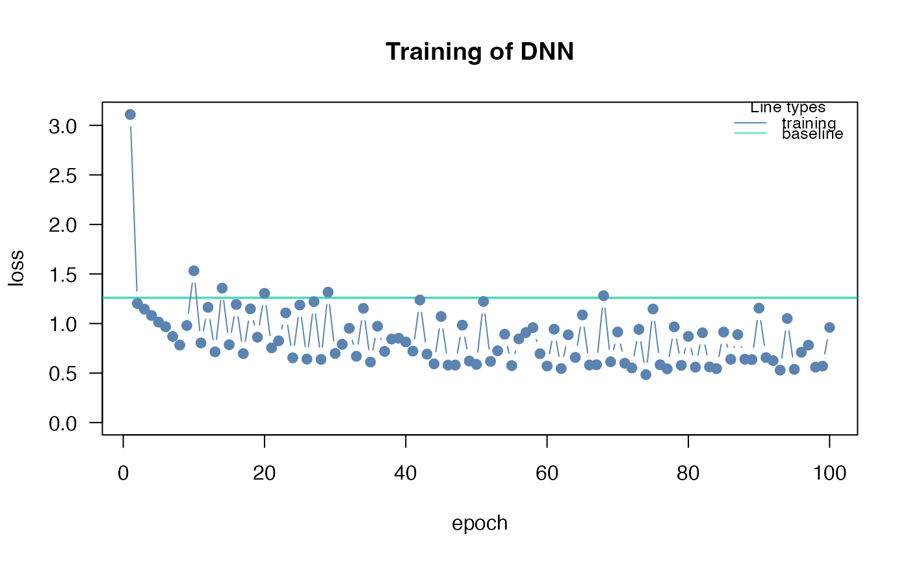
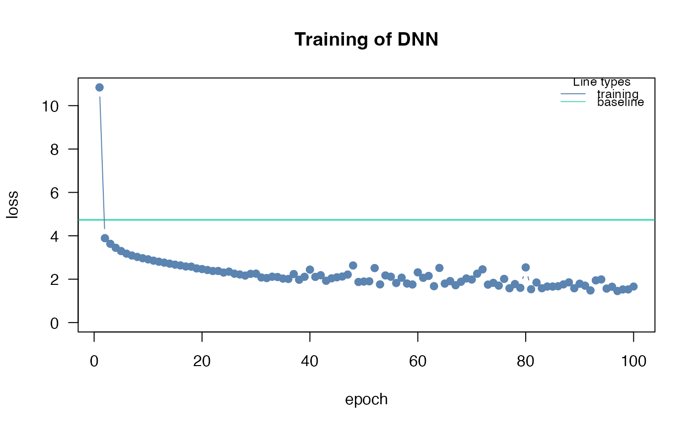
#> [,1] [,2] [,3]
#> [1,] 0.33247098 0.04241669 0.07494953
#> [2,] 0.04241669 0.16979757 0.02973274
#> [3,] 0.07494953 0.02973274 0.22169146
# }
#> Loss at epoch 2: 0.781178, lr: 0.01000
#> Loss at epoch 3: 0.686269, lr: 0.01000
#> Loss at epoch 4: 0.598250, lr: 0.01000
#> Loss at epoch 5: 0.531461, lr: 0.01000
#> Loss at epoch 6: 0.500856, lr: 0.01000
#> Loss at epoch 7: 0.454028, lr: 0.01000
#> Loss at epoch 8: 0.425335, lr: 0.01000
#> Loss at epoch 9: 0.411643, lr: 0.01000
#> Loss at epoch 10: 0.401492, lr: 0.01000
#> Loss at epoch 11: 0.362653, lr: 0.01000
#> Loss at epoch 12: 0.343971, lr: 0.01000
#> Loss at epoch 13: 0.331653, lr: 0.01000
#> Loss at epoch 14: 0.319508, lr: 0.01000
#> Loss at epoch 15: 0.297470, lr: 0.01000
#> Loss at epoch 16: 0.280757, lr: 0.01000
#> Loss at epoch 17: 0.285967, lr: 0.01000
#> Loss at epoch 18: 0.267452, lr: 0.01000
#> Loss at epoch 19: 0.256154, lr: 0.01000
#> Loss at epoch 20: 0.283718, lr: 0.01000
#> Loss at epoch 21: 0.232927, lr: 0.01000
#> Loss at epoch 22: 0.225556, lr: 0.01000
#> Loss at epoch 23: 0.208946, lr: 0.01000
#> Loss at epoch 24: 0.201307, lr: 0.01000
#> Loss at epoch 25: 0.198571, lr: 0.01000
#> Loss at epoch 26: 0.212871, lr: 0.01000
#> Loss at epoch 27: 0.191037, lr: 0.01000
#> Loss at epoch 28: 0.183692, lr: 0.01000
#> Loss at epoch 29: 0.183684, lr: 0.01000
#> Loss at epoch 30: 0.172652, lr: 0.01000
#> Loss at epoch 31: 0.158642, lr: 0.01000
#> Loss at epoch 32: 0.153388, lr: 0.01000
#> Loss at epoch 33: 0.159529, lr: 0.01000
#> Loss at epoch 34: 0.155886, lr: 0.01000
#> Loss at epoch 35: 0.141287, lr: 0.01000
#> Loss at epoch 36: 0.148917, lr: 0.01000
#> Loss at epoch 37: 0.152619, lr: 0.01000
#> Loss at epoch 38: 0.134613, lr: 0.01000
#> Loss at epoch 39: 0.135044, lr: 0.01000
#> Loss at epoch 40: 0.127126, lr: 0.01000
#> Loss at epoch 41: 0.129378, lr: 0.01000
#> Loss at epoch 42: 0.126594, lr: 0.01000
#> Loss at epoch 43: 0.121052, lr: 0.01000
#> Loss at epoch 44: 0.124277, lr: 0.01000
#> Loss at epoch 45: 0.122621, lr: 0.01000
#> Loss at epoch 46: 0.115365, lr: 0.01000
#> Loss at epoch 47: 0.112895, lr: 0.01000
#> Loss at epoch 48: 0.125984, lr: 0.01000
#> Loss at epoch 49: 0.121907, lr: 0.01000
#> Loss at epoch 50: 0.109851, lr: 0.01000
#> Loss at epoch 51: 0.107121, lr: 0.01000
#> Loss at epoch 52: 0.107226, lr: 0.01000
#> Loss at epoch 53: 0.105890, lr: 0.01000
#> Loss at epoch 54: 0.116141, lr: 0.01000
#> Loss at epoch 55: 0.111994, lr: 0.01000
#> Loss at epoch 56: 0.102944, lr: 0.01000
#> Loss at epoch 57: 0.108748, lr: 0.01000
#> Loss at epoch 58: 0.108930, lr: 0.01000
#> Loss at epoch 59: 0.111944, lr: 0.01000
#> Loss at epoch 60: 0.093649, lr: 0.01000
#> Loss at epoch 61: 0.098714, lr: 0.01000
#> Loss at epoch 62: 0.094321, lr: 0.01000
#> Loss at epoch 63: 0.099834, lr: 0.01000
#> Loss at epoch 64: 0.109629, lr: 0.01000
#> Loss at epoch 65: 0.088243, lr: 0.01000
#> Loss at epoch 66: 0.096260, lr: 0.01000
#> Loss at epoch 67: 0.094974, lr: 0.01000
#> Loss at epoch 68: 0.117039, lr: 0.01000
#> Loss at epoch 69: 0.087526, lr: 0.01000
#> Loss at epoch 70: 0.104483, lr: 0.01000
#> Loss at epoch 71: 0.084531, lr: 0.01000
#> Loss at epoch 72: 0.088917, lr: 0.01000
#> Loss at epoch 73: 0.085176, lr: 0.01000
#> Loss at epoch 74: 0.087149, lr: 0.01000
#> Loss at epoch 75: 0.105903, lr: 0.01000
#> Loss at epoch 76: 0.084588, lr: 0.01000
#> Loss at epoch 77: 0.096303, lr: 0.01000
#> Loss at epoch 78: 0.082790, lr: 0.01000
#> Loss at epoch 79: 0.091180, lr: 0.01000
#> Loss at epoch 80: 0.079777, lr: 0.01000
#> Loss at epoch 81: 0.079841, lr: 0.01000
#> Loss at epoch 82: 0.083883, lr: 0.01000
#> Loss at epoch 83: 0.075314, lr: 0.01000
#> Loss at epoch 84: 0.098915, lr: 0.01000
#> Loss at epoch 85: 0.087546, lr: 0.01000
#> Loss at epoch 86: 0.073237, lr: 0.01000
#> Loss at epoch 87: 0.073049, lr: 0.01000
#> Loss at epoch 88: 0.080827, lr: 0.01000
#> Loss at epoch 89: 0.088070, lr: 0.01000
#> Loss at epoch 90: 0.074319, lr: 0.01000
#> Loss at epoch 91: 0.093662, lr: 0.01000
#> Loss at epoch 92: 0.086580, lr: 0.01000
#> Loss at epoch 93: 0.084527, lr: 0.01000
#> Loss at epoch 94: 0.076824, lr: 0.01000
#> Loss at epoch 95: 0.086306, lr: 0.01000
#> Loss at epoch 96: 0.071252, lr: 0.01000
#> Loss at epoch 97: 0.082253, lr: 0.01000
#> Loss at epoch 98: 0.073169, lr: 0.01000
#> Loss at epoch 99: 0.100330, lr: 0.01000
#> Loss at epoch 100: 0.068483, lr: 0.01000
#> Loss at epoch 1: 3.745124, lr: 0.01000
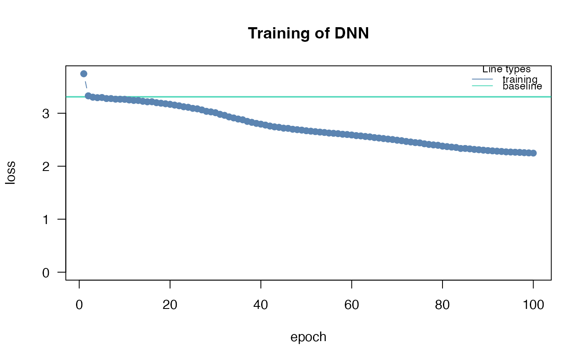
#> Loss at epoch 2: 3.328251, lr: 0.01000
#> Loss at epoch 3: 3.302773, lr: 0.01000
#> Loss at epoch 4: 3.293567, lr: 0.01000
#> Loss at epoch 5: 3.296934, lr: 0.01000
#> Loss at epoch 6: 3.277131, lr: 0.01000
#> Loss at epoch 7: 3.276492, lr: 0.01000
#> Loss at epoch 8: 3.265617, lr: 0.01000
#> Loss at epoch 9: 3.264305, lr: 0.01000
#> Loss at epoch 10: 3.262001, lr: 0.01000
#> Loss at epoch 11: 3.250504, lr: 0.01000
#> Loss at epoch 12: 3.241606, lr: 0.01000
#> Loss at epoch 13: 3.241011, lr: 0.01000
#> Loss at epoch 14: 3.225572, lr: 0.01000
#> Loss at epoch 15: 3.215665, lr: 0.01000
#> Loss at epoch 16: 3.216906, lr: 0.01000
#> Loss at epoch 17: 3.199386, lr: 0.01000
#> Loss at epoch 18: 3.188991, lr: 0.01000
#> Loss at epoch 19: 3.178707, lr: 0.01000
#> Loss at epoch 20: 3.168317, lr: 0.01000
#> Loss at epoch 21: 3.153696, lr: 0.01000
#> Loss at epoch 22: 3.140789, lr: 0.01000
#> Loss at epoch 23: 3.122335, lr: 0.01000
#> Loss at epoch 24: 3.112207, lr: 0.01000
#> Loss at epoch 25: 3.092271, lr: 0.01000
#> Loss at epoch 26: 3.083137, lr: 0.01000
#> Loss at epoch 27: 3.062716, lr: 0.01000
#> Loss at epoch 28: 3.036073, lr: 0.01000
#> Loss at epoch 29: 3.025473, lr: 0.01000
#> Loss at epoch 30: 3.009989, lr: 0.01000
#> Loss at epoch 31: 2.979538, lr: 0.01000
#> Loss at epoch 32: 2.960473, lr: 0.01000
#> Loss at epoch 33: 2.930881, lr: 0.01000
#> Loss at epoch 34: 2.911455, lr: 0.01000
#> Loss at epoch 35: 2.890503, lr: 0.01000
#> Loss at epoch 36: 2.876068, lr: 0.01000
#> Loss at epoch 37: 2.846273, lr: 0.01000
#> Loss at epoch 38: 2.828163, lr: 0.01000
#> Loss at epoch 39: 2.808601, lr: 0.01000
#> Loss at epoch 40: 2.793963, lr: 0.01000
#> Loss at epoch 41: 2.776763, lr: 0.01000
#> Loss at epoch 42: 2.757956, lr: 0.01000
#> Loss at epoch 43: 2.742979, lr: 0.01000
#> Loss at epoch 44: 2.734031, lr: 0.01000
#> Loss at epoch 45: 2.718337, lr: 0.01000
#> Loss at epoch 46: 2.714531, lr: 0.01000
#> Loss at epoch 47: 2.698085, lr: 0.01000
#> Loss at epoch 48: 2.690153, lr: 0.01000
#> Loss at epoch 49: 2.681735, lr: 0.01000
#> Loss at epoch 50: 2.669424, lr: 0.01000
#> Loss at epoch 51: 2.661329, lr: 0.01000
#> Loss at epoch 52: 2.652574, lr: 0.01000
#> Loss at epoch 53: 2.644271, lr: 0.01000
#> Loss at epoch 54: 2.636587, lr: 0.01000
#> Loss at epoch 55: 2.626241, lr: 0.01000
#> Loss at epoch 56: 2.621020, lr: 0.01000
#> Loss at epoch 57: 2.614562, lr: 0.01000
#> Loss at epoch 58: 2.603937, lr: 0.01000
#> Loss at epoch 59: 2.598161, lr: 0.01000
#> Loss at epoch 60: 2.589479, lr: 0.01000
#> Loss at epoch 61: 2.577862, lr: 0.01000
#> Loss at epoch 62: 2.571892, lr: 0.01000
#> Loss at epoch 63: 2.561261, lr: 0.01000
#> Loss at epoch 64: 2.553368, lr: 0.01000
#> Loss at epoch 65: 2.540743, lr: 0.01000
#> Loss at epoch 66: 2.531925, lr: 0.01000
#> Loss at epoch 67: 2.522212, lr: 0.01000
#> Loss at epoch 68: 2.511969, lr: 0.01000
#> Loss at epoch 69: 2.503509, lr: 0.01000
#> Loss at epoch 70: 2.491279, lr: 0.01000
#> Loss at epoch 71: 2.481796, lr: 0.01000
#> Loss at epoch 72: 2.467680, lr: 0.01000
#> Loss at epoch 73: 2.457318, lr: 0.01000
#> Loss at epoch 74: 2.446015, lr: 0.01000
#> Loss at epoch 75: 2.440097, lr: 0.01000
#> Loss at epoch 76: 2.423248, lr: 0.01000
#> Loss at epoch 77: 2.411274, lr: 0.01000
#> Loss at epoch 78: 2.402145, lr: 0.01000
#> Loss at epoch 79: 2.395086, lr: 0.01000
#> Loss at epoch 80: 2.379084, lr: 0.01000
#> Loss at epoch 81: 2.369966, lr: 0.01000
#> Loss at epoch 82: 2.360886, lr: 0.01000
#> Loss at epoch 83: 2.353713, lr: 0.01000
#> Loss at epoch 84: 2.335225, lr: 0.01000
#> Loss at epoch 85: 2.335493, lr: 0.01000
#> Loss at epoch 86: 2.327543, lr: 0.01000
#> Loss at epoch 87: 2.317135, lr: 0.01000
#> Loss at epoch 88: 2.311433, lr: 0.01000
#> Loss at epoch 89: 2.303082, lr: 0.01000
#> Loss at epoch 90: 2.295989, lr: 0.01000
#> Loss at epoch 91: 2.289847, lr: 0.01000
#> Loss at epoch 92: 2.283935, lr: 0.01000
#> Loss at epoch 93: 2.278621, lr: 0.01000
#> Loss at epoch 94: 2.270831, lr: 0.01000
#> Loss at epoch 95: 2.267579, lr: 0.01000
#> Loss at epoch 96: 2.264175, lr: 0.01000
#> Loss at epoch 97: 2.260736, lr: 0.01000
#> Loss at epoch 98: 2.255387, lr: 0.01000
#> Loss at epoch 99: 2.251438, lr: 0.01000
#> Loss at epoch 100: 2.247267, lr: 0.01000
#> [,1] [,2]
#> [1,] 5 2
#> [2,] 4 2
#> [3,] 10 2
#> [4,] 15 2
#> Starting hyperparameter tuning...
#> Fitting final model...
#> # A tibble: 10 × 6
#> steps test train models hidden lr
#> <int> <dbl> <dbl> <lgl> <list> <dbl>
#> 1 1 51.3 0 NA <dbl [2]> 0.0168
#> 2 2 63.5 0 NA <dbl [2]> 0.0722
#> 3 3 37.3 0 NA <dbl [2]> 0.0862
#> 4 4 33.1 0 NA <dbl [2]> 0.0869
#> 5 5 41.1 0 NA <dbl [2]> 0.0225
#> 6 6 30.6 0 NA <dbl [2]> 0.0625
#> 7 7 35.1 0 NA <dbl [2]> 0.0960
#> 8 8 32.9 0 NA <dbl [2]> 0.0654
#> 9 9 56.0 0 NA <dbl [2]> 0.0342
#> 10 10 102. 0 NA <dbl [2]> 0.00692
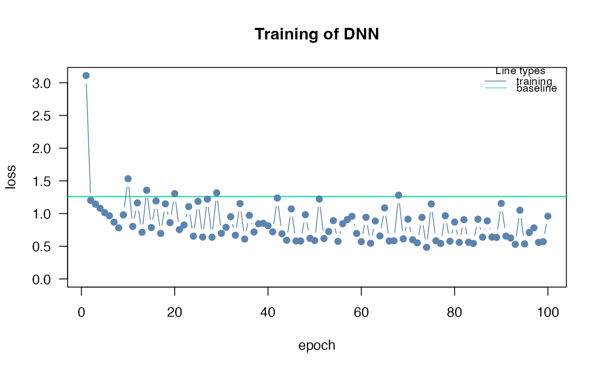
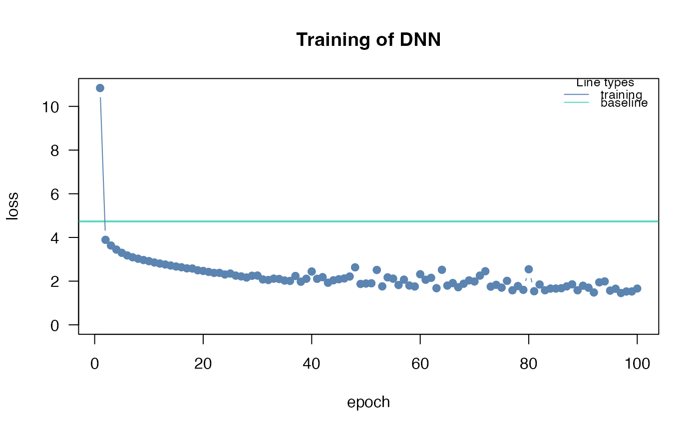
#> [,1] [,2] [,3]
#> [1,] 0.33247098 0.04241669 0.07494953
#> [2,] 0.04241669 0.16979757 0.02973274
#> [3,] 0.07494953 0.02973274 0.22169146
# }